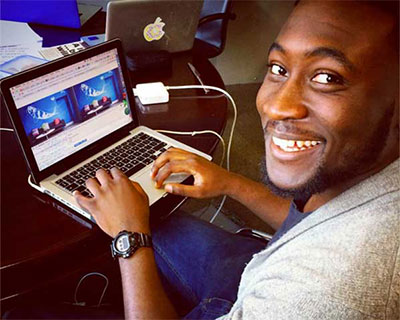

Leicestershire based Media Design agency, Seed Creativity ran a module my university programme called “Creative Media Entrepreneurship”. As part of the module I was required to choose an existing employer and pitch a product idea. Having undertaken research on digital enterprises in the Leicestershire area, I noticed that Seed Creativity themselves, lacked an engaging and rich web experience that met the needs of the modern consumer. Seed Creativity required a re-design was malleable and communicated the vision of the brand effectively. I pitched this idea to company directors, which they loved. The plans for development of the re-design shortly commenced.
User Interface Design & Front-End Development.
Photoshop, Illustrator, HTML, CSS, Sass, jQuery Grunt.js, Git, Wordpress
Effect Digital - Back-End Development
The re-design followed a flat and minimal design approach where vector assets really came to the fore.
Seed's “Big Digital Switchover” marketing consultation occupied the masthead on the Home Page as this is at the forefront of their sales pitch to win new customers.
An effective and convincing way for previous clients to really endorse Seed's services to a potiental new consumer.
A sleek and responsive menu which reinforces our aim to provide a compelling experience for mobile consumers.
The project began by fleshing out business objectives company directors which then led to undertaking qualitative research methods such as user surveys and observations to understand the type of users I was required to design for.
Once we knew who exactly we were designing for it enabled me and the company directors devise a strong information architecture for the new re-design by creating site maps, content audits and wireframes.
Using the information gathered from the previous stages high-fidelity visual mockups(Mobile/Desktop) and interaction storyboards were produced using Photoshop. A lot of the project was spent on this phase due to large number of iterations request by the product owners.
These designs were then presented to an external company(Effect Digital) for review as they were going to be implement the back-end of the site.
I then built a responsive prototype using HTML,CSS, Sass & jQuery. Versions of this prototype was committed regularly through Git and allowing the back-end developers to track to the process.
Having this project been my first commercial project and carried out the planning and design right through to front-end development by myself was quite a daunting experience at times. Especially when came to the front-end development aspects of the product, there a concern as to whether the quality of the code I produce will be massively hindered by inexperience. However, I used my initiative to utilise source code quality tools such as W3C validator and JShint.
